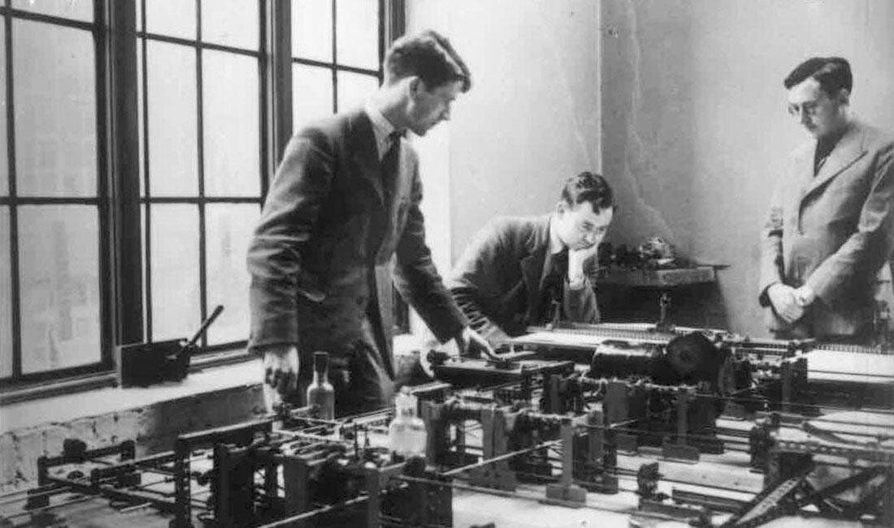

Британский ученый Морис Винсент Уилкс родился в 1913 году в Дадли. Когда пришло время получать образование, родители отправили его в Стоубридж в Колледж короля Эдуарда VI, где учитель химии пробудил в нем интерес к любительскому радио. В 1934 году Уилкс окончил Кембриджский колледж Святого Иоанна, где в разное время обучались около десяти будущих нобелевских лауреатов. Затем поступил в Кембриджский университет, выпускаясь из которого он защитил диссертацию о распространении радиоволн в ионосфере. Был назначен ассистентом в лабораторию математики Кембриджского университета, а позже участвовал в создании новой вычислительной лаборатории. В годы Второй мировой войны, с 1939 по 1945 год, он находился в составе действующей армии союзников, где служил инженером по радиолокации. После службы в армии Уилкс в сентябре 1945 года вернулся в Кембридж, но уже на должность директора Математической (позже Компьютерной) лаборатории. В ней ученый проработал до 1980 года. В мае 1946 года в руки Уилкса попала копия отчета Джона фон Неймана о создании компьютера под названием EDVAC. Он за одну ночь ознакомился с докладом и понял, что развитие компьютерной техники пойдет именно по этому пути. Он настолько заинтересовался трудом коллеги, что углубился в тему конструирования электронных цифровых компьютеров и записался на цикл лекций по этой теме в Электротехническую школу Мура. Это событие стало одним из самых значимых в жизни Мориса Уилкса, как ученого. Это подтверждают слова самого Уилкса: «Самое важное событие в моей жизни произошло в 1946 году… Мне удалось прослушать учебный курс по компьютерам, и он произвел на меня сильнейшее впечатление. Ничего подобного никогда раньше не было, а о достижениях школы Мура и других зачинателей компьютерной техники тогда знали лишь немногие». По возвращению с обучения Уилкс задумал создать собственную ПЭВМ. Можно сказать, что его проект повторяет идею фон Неймана, но ученый привнес в нее свое видение программного обеспечения компьютера, став одним из первых программистов в истории человечества. Уилкс работал над созданием более удобного способа кодирования, чем двоичная система, содержащая единицы и нули. Новые коды состояли из коротких английских слов, а каждая команда обозначалась заглавной буквой латинского алфавита. Так, действие вычитания обозначалось буквой S, остановка машины – Z, а передача информации в память – T. Морису удалось оптимизировать этот процесс, создав единую библиотеку подпрограмм и алгоритм, автоматически размещающий их в памяти компьютера, активировавшийся короткой командой. В середине XX века команда ученых под руководством Мориса Уилкса занялась разработкой второй версии компьютера EDSAC — EDSAC–2. При создании этой машины был реализован принцип программирования, при котором компьютер управлялся за счет команд, написанных в виде машинного кода.